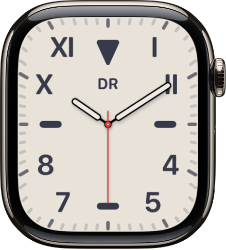

此表盘融合了罗马数字和阿拉伯数字。
下方的文件数包括本地化资源。固件名称键能确认包的归属；组件的圆屏点击边界、亮屏过渡与 AOD 对照均待设备验证。
NTKCaliforniaFaceBundle.bundleFACE_STYLE_CALIFORNIA_DESCRIPTION_KINCAIDFACE_STYLE_CALIFORNIA_DESCRIPTIONEDIT_OPTION_LABEL_CALIFORNIA_STYLE_OL_CHIKIEDIT_OPTION_LABEL_CALIFORNIA_STYLE_PILLSEDIT_OPTION_LABEL_CALIFORNIA_STYLE_ARABIC_COMPATIBILITYEDIT_OPTION_LABEL_CALIFORNIA_STYLE_NUMERALSEDIT_OPTION_LABEL_CALIFORNIA_STYLE_GUJARATIEDIT_OPTION_LABEL_CALIFORNIA_STYLE_URDUEDIT_OPTION_LABEL_CALIFORNIA_STYLE_CHINESEEDIT_OPTION_LABEL_CALIFORNIA_STYLE_HINDIEDIT_OPTION_LABEL_CALIFORNIA_STYLE_KANNADAEDIT_OPTION_LABEL_CALIFORNIA_STYLE_BENGALIEDIT_OPTION_LABEL_CALIFORNIA_STYLE_ROMANEDIT_OPTION_LABEL_CALIFORNIA_STYLE_BURMESEEDIT_OPTION_LABEL_CALIFORNIA_STYLE_NUMERALS_COMPATIBILITYEDIT_OPTION_LABEL_CALIFORNIA_STYLE_ARABICEDIT_OPTION_LABEL_CALIFORNIA_STYLE_ODIAEDIT_OPTION_LABEL_CALIFORNIA_STYLE_GURMUKHIEDIT_OPTION_LABEL_CALIFORNIA_STYLE_KHMEREDIT_OPTION_LABEL_CALIFORNIA_STYLE_MEITEIEDIT_OPTION_LABEL_CALIFORNIA_STYLE_MALAYALAMEDIT_OPTION_LABEL_CALIFORNIA_STYLE_CALIFORNIAEDIT_OPTION_LABEL_CALIFORNIA_STYLE_TELUGU色组与设备条件 共享色组与默认值
-[NTKCaliforniaContentView applyTransitionTritiumOnWithFraction:];-[NTKCaliforniaFaceView tritium_didTransitionToTritiumOff];-[NTKCaliforniaFaceView tritium_usesWidgetTransitionPresetColors];-[NTKCaliforniaFaceView tritium_createFaceAnimator];-[NTKCaliforniaFaceView _updateColorForTritiumWithProgress:];-[NTKCaliforniaFaceView _tritium_updateComplicationColors];-[NTKCaliforniaContentView setCircularBezelTickAlpha:];-[NTKCaliforniaContentView minuteTickColorForIndex:palette:dial:];-[NTKCaliforniaContentView applyTransitionTritiumOnWithFraction:];-[NTKCaliforniaContentView hourTickColorForIndex:palette:dial:];-[NTKCaliforniaContentView tickColorForIndex:palette:dial:];-[NTKCaliforniaContentView tickCircularOpacities];-[NTKCaliforniaContentView configureTicksForStatus:];-[NTKCaliforniaContentView styleTransitionHandler];-[NTKCaliforniaContentView applyTransitionFraction:fromColorPalette:toColorPalette:];-[NTKCaliforniaContentView applyTransitionFraction:fromStyle:toStyle:];-[NTKCaliforniaContentView tickLayers];-[NTKCaliforniaContentView setMinuteTicks:];-[NTKCaliforniaContentView setTickCircularOpacities:];-[NTKCaliforniaContentView circularBezelTickAlpha];-[NTKCaliforniaContentView layoutTicks];-[NTKCaliforniaContentView applyTransitionFractionToTicksFraction:fromDial:toDial:];-[NTKCaliforniaContentView setHourTicks:];-[NTKCaliforniaContentView setTicksHiddenRange:];-[NTKCaliforniaContentView setTickLayers:];-[NTKCaliforniaContentView minuteTicks];-[NTKCaliforniaContentView addTicksIfNeeded];-[NTKCaliforniaContentView hourTicks];-[NTKCaliforniaContentView setMinuteTicksColor:];-[NTKCaliforniaContentView setHourTicksColor:];-[NTKCaliforniaContentView applyTransitionFraction:fromDial:toDial:];-[NTKCaliforniaContentView tickRingWidth];-[NTKCaliforniaContentView setStyleTransitionHandler:];-[NTKCaliforniaFaceView _setComplicationAlphaForTransitionFraction:fromOption:toOption:customEditMode:slot:];-[NTKCaliforniaFaceView _updateDialTicksForBezelText];-[NTKCaliforniaFaceView tritium_didTransitionToTritiumOff];-[NTKCaliforniaFaceView tritium_usesWidgetTransitionPresetColors];-[NTKCaliforniaFaceView _applyTransitionFraction:fromOption:toOption:forCustomEditMode:slot:];-[NTKCaliforniaFaceView tritium_createFaceAnimator];-[NTKCaliforniaFaceView _applyTransitionFraction:fromStyle:toStyle:];-[NTKCaliforniaFaceView _applyTransitionFraction:fromComplication:toComplication:slot:];-[NTKCaliforniaFaceView _applyTransitionFraction:fromColorPalette:toColorPalette:];-[NTKCaliforniaFaceView _cleanupAfterTransitionComplicationSlot:selectedComplication:];-[NTKCaliforniaFaceView _applyComplicationColorTransitionFraction:fromColorPalette:toColorPalette:];-[NTKCaliforniaFaceView _applyTransitionFraction:fromDial:toDial:];-[NTKCaliforniaFaceView applyTransitionToCircularDialWithBezelFraction:];-[NTKCaliforniaFaceView _configureForTransitionFraction:fromEditMode:toEditMode:];-[NTKCaliforniaStyleTransitionHandler setHourMarkersCount:];-[NTKCaliforniaStyleTransitionHandler centerPoint];-[NTKCaliforniaStyleTransitionHandler dial];-[NTKCaliforniaStyleTransitionHandler animationDurationForHourMarkerAtIndex:markerType:];-[NTKCaliforniaStyleTransitionHandler setFadeInHourMarkersCenterPoints:];-[NTKCaliforniaStyleTransitionHandler setFadeOutHourMarkersCenterPoints:];-[NTKCaliforniaStyleTransitionHandler opacityForMarkerAtIndex:markerType:];-[NTKCaliforniaStyleTransitionHandler setFraction:];-[NTKCaliforniaStyleTransitionHandler device];-[NTKCaliforniaStyleTransitionHandler animationProgressForHourMarkerAtIndex:markerType:];-[NTKCaliforniaStyleTransitionHandler initWithDevice:];-[NTKCaliforniaStyleTransitionHandler transformForMarkerAtIndex:markerType:];-[NTKCaliforniaStyleTransitionHandler positionForMarkerAtIndex:markerType:];-[NTKCaliforniaStyleTransitionHandler animationStartTimeForMarkerAtIndex:markerType:];-[NTKCaliforniaStyleTransitionHandler fadeInHourMarkersCenterPoints];-[NTKCaliforniaStyleTransitionHandler setCenterPoint:];-[NTKCaliforniaStyleTransitionHandler setDial:];-[NTKCaliforniaStyleTransitionHandler hourMarkersCount];-[NTKCaliforniaStyleTransitionHandler fraction];-[NTKCaliforniaStyleTransitionHandler setDevice:];-[NTKCaliforniaStyleTransitionHandler fadeOutHourMarkersCenterPoints];-[NTKCaliforniaContentView minuteTickColorForIndex:palette:dial:];-[NTKCaliforniaContentView hourTickColorForIndex:palette:dial:];-[NTKCaliforniaContentView isBezelComplicationEnabled];-[NTKCaliforniaContentView tickColorForIndex:palette:dial:];-[NTKCaliforniaContentView layoutSubviews];-[NTKCaliforniaContentView applyTransitionFraction:fromColorPalette:toColorPalette:];-[NTKCaliforniaContentView _layoutHourMarkersLayers:style:dialShape:];-[NTKCaliforniaContentView setColorPalette:];-[NTKCaliforniaContentView layoutTicks];-[NTKCaliforniaContentView setColorInHourMarkerView:color:];-[NTKCaliforniaContentView colorPalette];-[NTKCaliforniaContentView initWithFrame:dial:style:colorPalette:device:];-[NTKCaliforniaContentView setMinuteTicksColor:];-[NTKCaliforniaContentView setHourTicksColor:];-[NTKCaliforniaContentView setBezelComplicationEnabled:];+[NTKCaliforniaFace complicationConfiguration];-[NTKCaliforniaFace complicationSlotsHiddenByEditOption:];-[NTKCaliforniaFace applyPreviewConfigurationWithFamily:faceColor:];-[NTKCaliforniaFace _numberOfOptionsForCustomEditMode:slot:];-[NTKCaliforniaFace _defaultOptionForCustomEditMode:slot:];-[NTKCaliforniaFace _indexOfOption:forCustomEditMode:slot:];-[NTKCaliforniaFace defaultColorForDevice:];-[NTKCaliforniaFace _optionAtIndex:forCustomEditMode:slot:];-[NTKCaliforniaFaceBundle complicationTypesBySlotForDevice:];-[NTKCaliforniaFaceBundle _californiaFacesWithColorOptions:device:];-[NTKCaliforniaFaceComplicationDescriptor complicationExistenceInvalidatesSnapshot];-[NTKCaliforniaFaceComplicationDescriptor richComplicationSlotsForDevice:];-[NTKCaliforniaFaceComplicationDescriptor localizedNameForComplicationSlot:];-[NTKCaliforniaFaceComplicationDescriptor orderedComplicationSlots];-[NTKCaliforniaFaceComplicationDescriptor complicationSlotDescriptors];-[NTKCaliforniaFaceView applyColorOnAnalogHands];-[NTKCaliforniaFaceView _setComplicationAlphaForTransitionFraction:fromOption:toOption:customEditMode:slot:];-[NTKCaliforniaFaceView createFaceColorPalette];-[NTKCaliforniaFaceView _editSpeedForCustomEditMode:slot:];-[NTKCaliforniaFaceView tritium_usesWidgetTransitionPresetColors];-[NTKCaliforniaFaceView _applyTransitionFraction:fromOption:toOption:forCustomEditMode:slot:];-[NTKCaliforniaFaceView layoutSubviews];-[NTKCaliforniaFaceView _applyBreathingFraction:forCustomEditMode:slot:];-[NTKCaliforniaFaceView _applyOption:forCustomEditMode:slot:];-[NTKCaliforniaFaceView _cleanupAfterEditing];-[NTKCaliforniaFaceView _applyTransitionFraction:fromComplication:toComplication:slot:];-[NTKCaliforniaFaceView _updateColorForTritiumWithProgress:];-[NTKCaliforniaFaceView _simpleTextComplicationColorForEditMode:];-[NTKCaliforniaFaceView _fadesComplicationSlot:inEditMode:];-[NTKCaliforniaFaceView utilityComplicationView:didChangeTextWidth:];-[NTKCaliforniaFaceView _applyTransitionFraction:fromColorPalette:toColorPalette:];-[NTKCaliforniaFaceView _updateSubDialRichComplicationsColor:alternateColor:];-[NTKCaliforniaFaceView _configureComplicationView:forSlot:];-[NTKCaliforniaFaceView _cleanupAfterTransitionComplicationSlot:selectedComplication:];-[NTKCaliforniaFaceView colorPalette];-[NTKCaliforniaFaceView _applyComplicationColorTransitionFraction:fromColorPalette:toColorPalette:];-[NTKCaliforniaFaceView _legacyShouldSwapGraphicCircularComplicationColors];-[NTKCaliforniaFaceView _minimumBreathingScaleForComplicationSlot:];-[NTKCaliforniaFaceView _updateDialBezelComplicationColor:];-[NTKCaliforniaFaceView bezelComplicationTextWidthInRadians];-[NTKCaliforniaFaceView _tritium_updateComplicationColors];-[NTKCaliforniaFaceView backgroundColorForDial:palette:];-[NTKCaliforniaFaceView _updateSimpleTextLabelColor:];-[NTKCaliforniaFaceView updateWithPalette:];-[NTKCaliforniaFaceView _updateComplicationCenterOffsetForStyle:];-[NTKCaliforniaFaceView utilityBezelComplicationView];